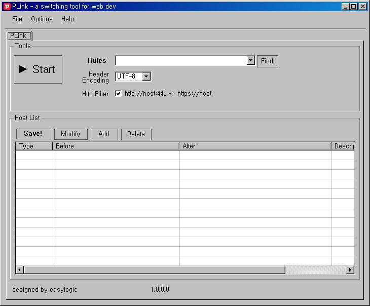

PLink - 개발환경 접속 에이전트
PLInk 는 무엇인가요?
PLink 는 네오위즈에서 사용하던 개발환경 접속 에이전트를 오픈소스로 옮긴 것입니다.
PLink 는 Proxy 입니다.
- PLink 는 Proxy(Fiddler Addon)이기 때문에 웹브라우저와 상관없이 동작합니다.
- 브라우저에 맞는 애드온을 설치하실 필요가 없습니다.
- 브라우저에서 접속하는 url 과 실제로 요청하는 url 이 다르게 적용하기 때문에 개발환경 접속을 쉽게 하실 수 있습니다.
- hosts 파일을 변경하지 않기 때문에 새로운 브라우저를 열지 않고 새로고침만으로 바로 적용이 가능합니다.
- 모바일 브라우저에서도 Proxy 설정만 하면 같은 개발환경을 바로 접속하실 수 있습니다.
- 윈도우 전용 어플입니다. (다른 운영체제에서는 다르게 접속하실 수 있습니다.) 참고
개발환경 접속을 한다는게 무슨 말인가요?
보통 웹서비스를 개발한다고 한다면 alpha, beta, real 3가지 정도의 서버 규모가 있는데요.
alpha, beta 서버를 접근을 할려면 매번 수많은 도메인이 있는 hosts 파일을 수정해서 사용했어야 했습니다.
불편하기도 하고 특히나 웹브라우저에서 테스트 할 때는 브라우저를 새로 열어어야했습니다.
PLink 는 그러한 불편한 점을 많이 개선하였습니다.
PLink 는 어떤 기능이 있나요?
PLink 는 기본적으로 Fiddler 를 기반으로 하고 있습니다. 기존에 웹 디버깅 툴로 Fiddler 를 많이 사용하고 계신데요. 여기에 애드온 형태로 개발환경을 좀 더 편하게 접속 할 수 있는 기능들을 추가했습니다.
Change Home Url
www.pmang.com => dev.test.com/~neowizgame/home
특정 디렉토리로 홈이 걸려 있는 경우 hosts 파일을 설정하지 않고 도메인을 바로 다른 URL로 매칭시키는 방법입니다. 개발자별로 특정 디렉토리를 가지고 있거나 하나의 호스팅 서비스에 개발환경을 구성할 때 유용한 방법입니다.
Hosts Simulate
www.pmang.com => www.test.com
이 방법을 쓰면 실제로 연결 되는 곳이 www.pmang.com 으로 접근을 해도 실제로 연결되는 곳이 www.test.com 으로 연결이 됩니다.
이 방법은 hosts 파일을 바꾸는 것과 같은 효과를 주며 실제로 hosts파일을 변경하지 않고 host 를 변경한 효과를 주기 때문에
하나의 서버에 여러대의 서브 도메인을 가지고 있을 때 유용하게 사용하 실 수 있습니다.
Change Pattern
1,2 번의 방법은 도메인 자체에 대해서 적용이 되는 방법이었습니다. 마지막으로 3번 패턴 적용은 url 자체를 내부적으로 변환해서 실제 url 과 같은 효과를 줄 수 있게 변경합니다.
www.pmang.com => www.test.com
www.pmang.com/index.nwz => www.test.com/~neowizgames/test/index.nwz
www.pmang.com/index_beta.nwz => www.test.com/~neowizgames/test_beta/index.nwz
url 을 자체를 변환하기 때문에 1,2 에 더해서 좀 더 유용하게 패턴을 정의할 수 있습니다.
위의 3가지 상태에 따라 여러가지 개발환경을 접속할 수 있는 기능을 가지게 됩니다.